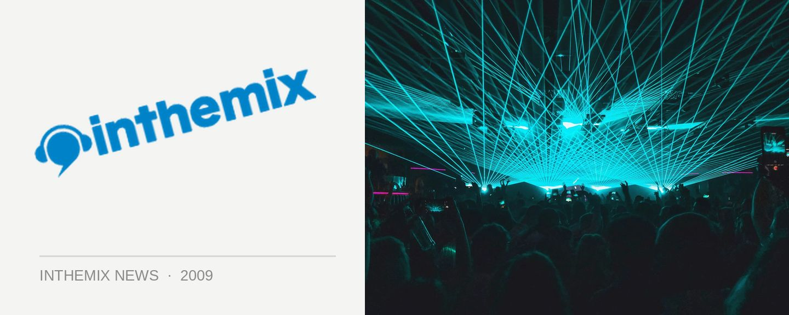

Good Vibrations 2010 lineup arrives Friday 8am
The festival news and lineup revelations have been non stop, but for ITMers there’s one more crucial announcement to go… This Friday morning at 8am, after much teasing and speculation, the lineup for the 2010 edition of the Good Vibrations Festival will arrive at ITM, so make sure you’re back at the site.
Monday saw the announcement that US rapper Kid Cudi would be along for the ride, with news following shortly of a club show for Z-Trip and DJ Spinderella of Salt-N-Pepa fame that’s conveniently timed around the Good Vibes festival. But these names are likely to be the tip of the iceberg, as Good Vibrations has traditionally boasted the sort of lineup that draws together a wide variety of musical styles – from the big-name drawcards on the mainstage, to the hip hop from both the old and new school holding sway in the Roots Tent, to the seasoned club DJs who keep the Laundry tent rocking all day long. It’s been a favourite of ITMers since its debut in the summer of ‘04, so hold onto your hats for another dose of festival excitement.
Be back at ITM at 8am Friday October 23rd for the full lineup for Good Vibrations 2010! Check out ITM’s Festival Page for more info, national dates below:
Sat 13 Feb – Centennial Park, Sydney
Sun 14 Feb – Claremont Showground, Perth
Sat 20 Feb – Parklands Showgrounds, Gold Coast
Sun 21 Feb – The Nursery, Flemington Racecourse, Melbourne